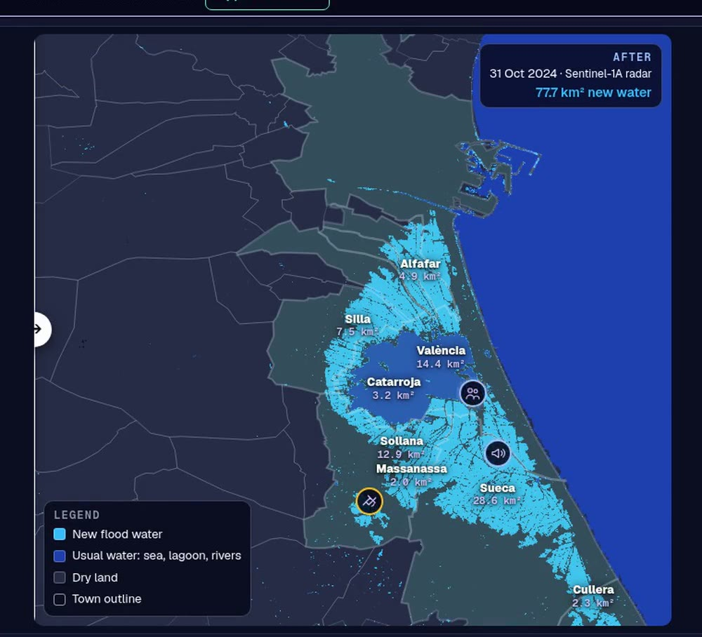
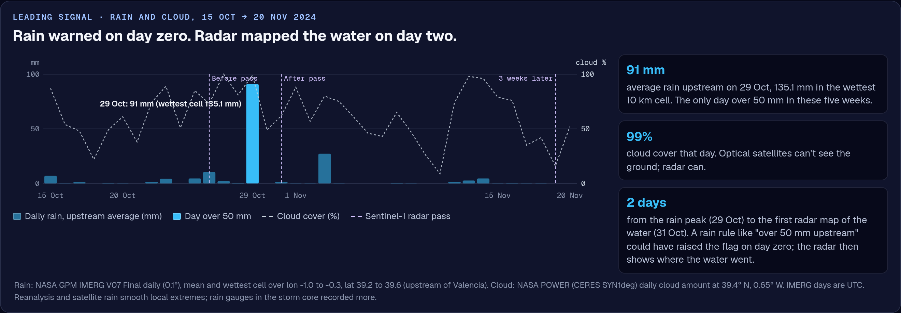
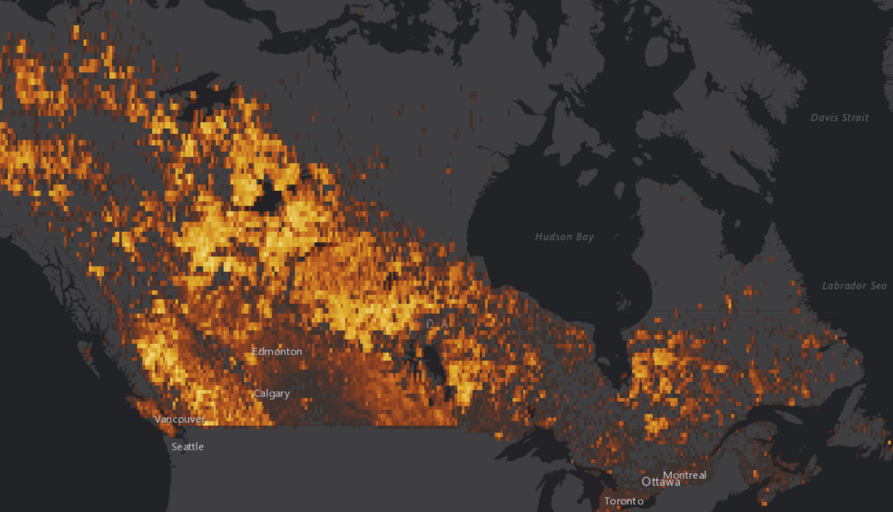
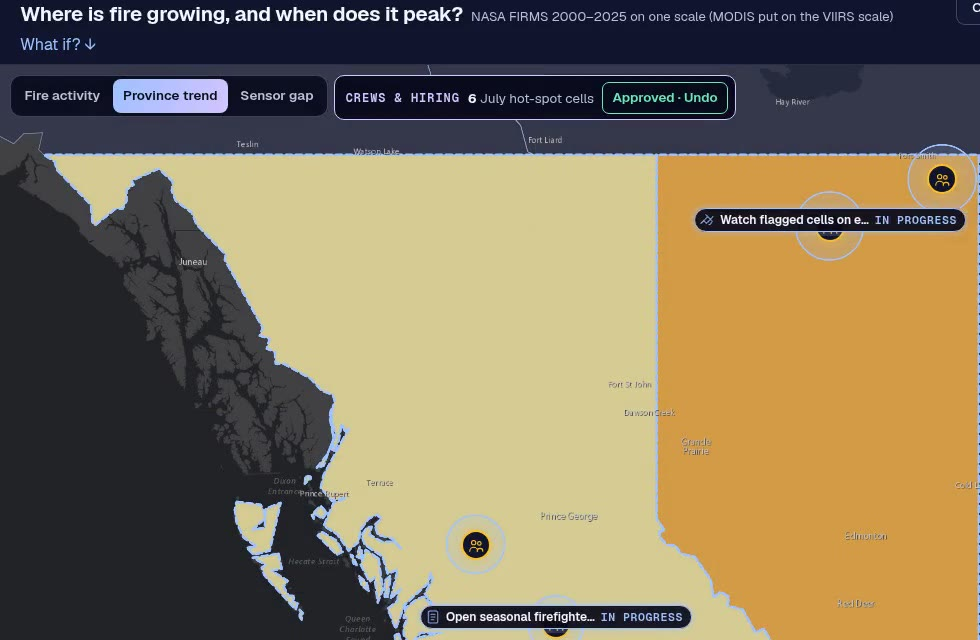
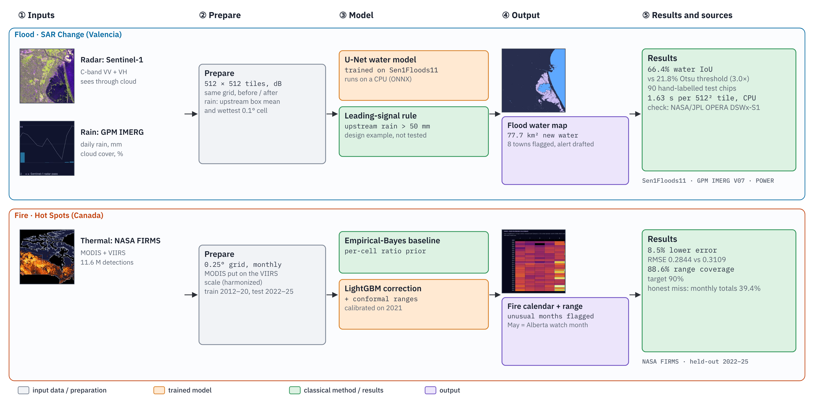
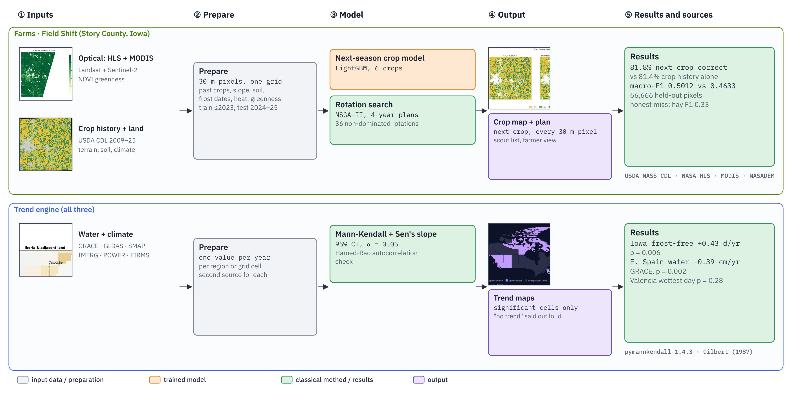

NASA Space Apps 2026 · Be An Earth System Trend Detective! · Orbit to Ground1 / 10
Valencia, Spain
29 October 2024.
771.8 mm of rain fell on one town in a day. The phone alert went out at 20:11. By then, at least 156 people had died.

Radar flood map · 31 Oct · 8 townsTasking (simulated)
AEMET event study (Turís, 29 Oct 2024) · El País, 26 Oct 2025 · map: NASA/JPL OPERA DSWx-S1Team GeoAI Toronto · Parsa Riahi
Story 1 · Valencia, 29 October 20242 / 10
Imagine losing someone you love because no one knew how much rain was coming that day.

From our flood app · NASA rain and cloud, 15 Oct → 20 Nov 2024
Simulated
Our app's timeline · the same night, rewound
E
Elena, emergency coordinator, Catarroja
25 people died in her town. Illustrative composite
red warning for the province
first recorded death
Poyo ravine at 2,282 m³/s
phone alert; at least 156 already dead
12 h 35 minfrom the red warning to the phone alert. 229 people died in the Valencia region.
AEMET · Newtral · El País, 26 Oct 2025 · rain: NASA GPM IMERG V07, cloud: NASA POWER · timeline: our dashboard, simulatedOrbit to Ground
Story 1 · rewind, with Orbit to Ground3 / 10
Rewind. Same night, same data, with Orbit to Ground.
1Signal
Rain piles up upstream
91 mm upstream on 29 Oct (135 mm in the wettest cell). 99% cloud: optical is blind.
2Map
Radar sees through cloud
77.7 km² of new water (+47.0). 8 towns hold 75.8 km² of it.
3Alert
One alert to all 8 towns
The water area, the rain and "stay off low ground", ready to send.
Alert (simulated)
4Dispatch
Teams, passes and aid
Rescue teams go to the flagged towns, drones to the streets radar can't see, and the next pass is queued.
Tasking (simulated)
With an upstream rain signal and a radar map, Elena could have had a drafted alert for her town hours before 20:11, and a map of where the water went.
Hypothetical rewind · tasking and alerts are simulatedNASA GPM IMERG V07 · NASA POWER · NASA/JPL OPERA DSWx-S1 (26 → 31 Oct)
Story 2 · before the fire season4 / 10
Hot Spots · 11.6 M fire detections, 2000–2025Canada's fire map, then a duty officer staffs up early.

Canada, B.C. → Quebec · fires per year, 2003–2025 average

Alberta + B.C. · crews and hiringTasking (simulated)
Queue (simulated)
The trend+1,503 a year
Alberta detections (p = 0.035); B.C. +2,587 (p = 0.045)
The watch monthMay
5 of Alberta's 16 unusual fire months since 2000
Staffing alert and notice are simulatedNASA FIRMS, harmonized MODIS + VIIRS · a trend line, not a forecast
One engine, many sectors5 / 10
One engine. Signal → map → alert → task. Many sectors.
Field Shift · crop map, every 30 m pixel · Story County
Built · corn, soybean, hay, grass and more · next-season crop 81.8% correct (held-out 2024–25)
Emergency mgmt
Flood water map by town, alert draft, dispatchSAR Change · Valencia · 66.4% IoU
Built
Wildfire
Pre-season staffing and community noticeHot Spots · Canada + Argentina · 26 years
Built
Agriculture
Crop map, next-crop call, 4-year planField Shift · Story County, Iowa
Built
Water · drought
Groundwater trend watch, eastern SpainGRACE −0.39 cm a year (p = 0.002)
Built
Water · drought
Drought and crop-stress alerts to growers
Future
Health · air
Smoke advisories for schools and clinics, from fire detections
Future
Infrastructure
Flood exposure of roads, rail and insured property, from the radar map
Future
Civil works
Landslide watch on slopes after heavy rain
Future
Built = live in the three dashboards · future = ideas, not results · civil uses only · map: USDA NASS CDL 2025Orbit to Ground
Under the hood · 1 of 26 / 10
Data in, model, output, score: flood and fire.

One seed each, not a published benchmark · test sets: Sen1Floods11 (90 hand-labelled chips), FIRMS held-out 2022–25Orbit to Ground
Under the hood · 2 of 27 / 10
Data in, model, output, score: farms and trends.

One seed, held-out 2024–25 · trends report p-values, and "no trend" when there is noneOrbit to Ground
Impact · what if it had been there?8 / 10
What the same signal is worth, a few hours or days earlier.
Flood · Valencia, 29 Oct 2024
12 hours earlier = an alert before the first death. Published warning curves put about €1.1 bn of Valencia's €4.8 bn insured loss within reach.
13%6 h
22%12 h
30%24 h
~33%48 h
22% × €4.8 bn insured = €1.06 bn 08:11 alert vs first death at 11:45
The gap was turning the 07:36 warning into a local alert. The map: rain signal about 2 days before the first radar pass, 4 days before the Copernicus map. No lives estimate.
Today: AEMET warns by zone, EFAS emails agencies, ES-Alert said only "avoid travel". We add a town-specific alert draft and radar map on one screen.
Fire · Alberta
The data flags May months ahead: staffing on 15 April instead of 1 May gives 16 more days of readiness. Every escape prevented spares about 65,000 ha.
1,088 fires × 3% ≈ 33 escapes 97% × 2.2 M ha ÷ 33 ≈ 65,000 ha each
Readiness across the season, not the outcome of any one fire. Escapes prevented is an assumption.
Today: FIRMS shows fires now; CWFIS covers days of fire weather; staffing is set by calendar. We add the 26-year per-province view.
Farms · a 2012-type drought
In a 2012-type drought, rye on Story County's 92 steepest squares is worth about $1.2 M net, and our map is ready before planting instead of 11 months after.
(11.1 bu × $6.89 − $32.09) = $44.39/acre × 26,500 acres ≈ $1.18 M
Drought insurance: a small cost most years, a payout in dry ones.
Today: the USDA crop map arrives after the season; plantings are state-level. We add a per-field next-season map.
Illustrative estimate · not a measured outcomeDay (1970) via NHWC · GCA 2019 · Pappenberger 2015 · CCS · El País · MNP 2017 · Stocks 2002 · USDA NASS · SARE/CTIC · ISU · full math in IMPACT.md
Human value9 / 10
From a satellite signal to a decision, in time to act.
Flood · emergency coordinator
Which towns, and when
Optical satellites see only cloud. Towns are ranked from calls.
A radar water map by town on day two, and an alert draft ready.
77.7 km²mapped through cloud · 66.4% IoU
Fire · duty officer
Staff and warn before the season
Crews called in after the fire starts.
Crews staged before July, and a community notice before May.
5 of 16unusual Alberta months in May
Farm · grower
What to plant next
Plan from habit and last year's field.
A next-crop call and a 4-year plan, with rye on steep fields.
+19 dayslonger frost-free season since 1981
Orbit to Ground. See it. Decide. Act.
Team GeoAI TorontoParsa Riahi · Toronto, Canada nasa-spaceapps-2026.pages.dev
Every number comes from our own runs on public data · tasking and alerts are simulated · not affiliated with NASACode Apache-2.0
Product demos · try it live10 / 10
Watch it work. Then open the apps.
Primary demo · flood▶
SAR Change · the Valencia floodrain signal → radar map → alert → dispatchOpen the app →
 Simulated
Simulated